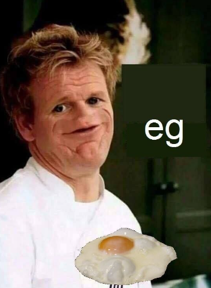

This is the second time I am going through The Odin Project. This will be a recipe site that utilises HTML and CSS.
Other programming languages may also be used, however currently I don't plan on it.
These are just 2 lists that have been written in basic HTML, the first is an unordered list and the second is an ordered list. Currently not relevant.